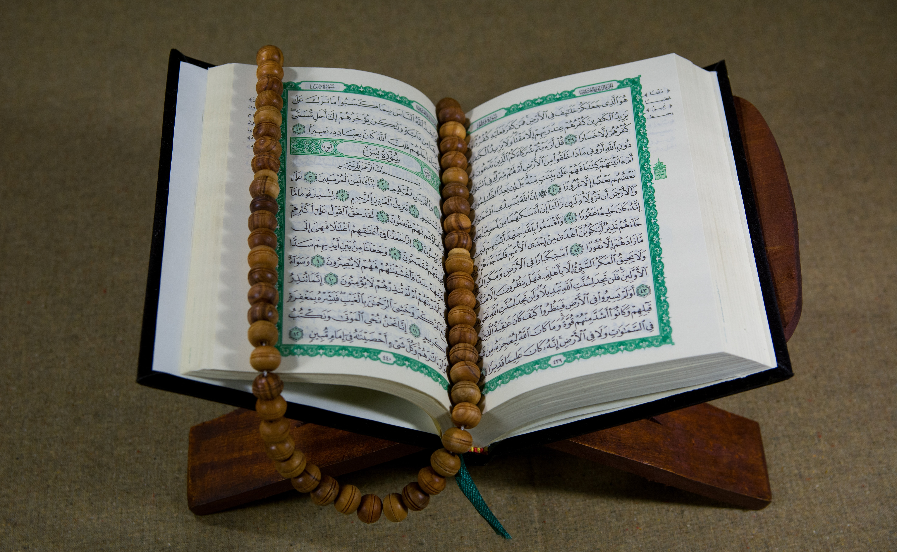
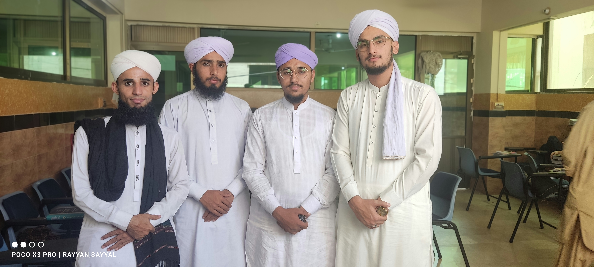
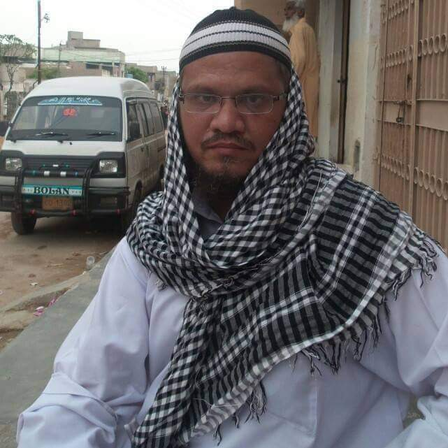
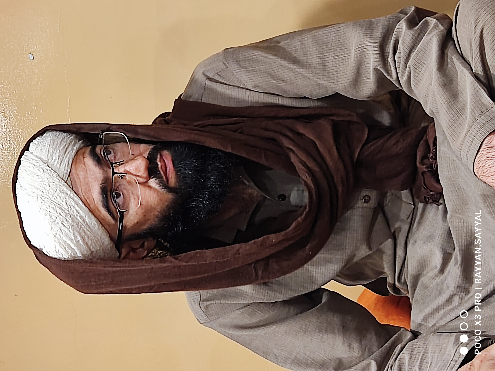
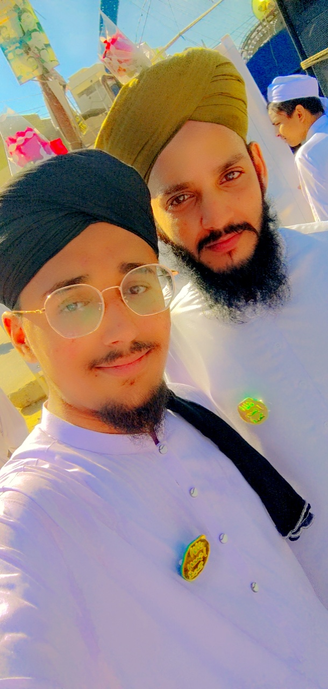

About For Rayyan Sayyal
I was born in the city of Karachi on 10 December 2001

By the grace and favor of Allah Ta'ala, I memorized the Holy Quran completely at the age of 11.

After completing the memorization of the Holy Quran, I completed matriculation Board Of Secendry
at the age of 13.

After matriculation, he completed his secondary from Intermediate Board at the age of 17 .

Then, by the grace and mercy of Allah Almighty and the special favor of the Holy Prophet (peace
and blessings of Allah be upon him), the prayers of my parents and the hard work and compassion
of our teachers, Alhamdulillah, I completed the Dars Nizami course at the age of 21.

I would like to show you some pictures of my honorable teachers, thanks to whom I am standing at this place today

My first honorable teacher Allama Anis Sahab with whom I started the journey of education
My Second honorable teacher Muti Khalid Awan Sahab with whom I started the journey of education

My Therd honorable teacher Muti Abdullah Madani Sahab with whom I started the journey of education

My honorable teacher Allama Abdulsattar Sahab with whom I started the journey of education

My honorable teacher Allama Abdul Khaliq Sahab with whom I started the journey of education

My honorable teacher Allama Rashid Ali Madani Sahab with whom I started the journey of education

My honorable teacher Allama Abul-Kalam Faiyaz Sahab with whom I started the journey of education

My honorable teacher Allama Innama-u-llah Sahab with whom I started the journey of education

My honorable teacher Allama Adnan Sahab with whom I started the journey of education

My honorable teacher Allama Owais Nazeer Sahab with whom I started the journey of education

My honorable teacher Allama Faizan Sahab with whom I started the journey of education
